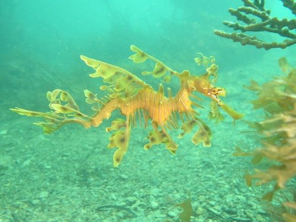

Separate look-alikes.
Additive-margin objectives from face recognition sharpen subtle species boundaries.
ArcFace + CosFace / AM-Softmax17,393 species. Two thirds have zero training photographs, only taxonomy and morphology, and the median species that does have photographs has two. Every evaluation image gets one classification, across the full space.

Phycodurus equesFishONet does not apply one generic classifier to four different failure modes. Each difficulty has a specific response, joined by one blind routing rule.
Additive-margin objectives from face recognition sharpen subtle species boundaries.
ArcFace + CosFace / AM-SoftmaxFrequency-aware training and instance evidence keep two-image classes competitive.
Balanced Softmax + exemplarsText, taxonomy, TreeOfLife prototypes, and disclosed photographs make zero-shot species retrievable.
Multimodal Fish Support BankA learned soft gate ranks familiarity and allocates a fixed quota without reading split membership.
Proposed Quota GateThe evaluation set is class-disjoint and unlabelled. Misrouting a specimen makes the correct answer unreachable: each half of the system can only propose candidates from its own side.
Pick a citizen-science specimen. Every similarity score below is real model output from the BioCLIP-2.5 and TaxaBind ensemble, not a mockup.
This is , held out from training images. The system decides, on its own, whether it has ever encountered this species before it is allowed to answer.
Citizen-science conditions: turbidity, an aspect-ratio shift between train (1.15) and eval (2.12), and extreme pose variation.
Complementary encoders, each fine-tuned only on the provided training images, embed the same photograph in parallel. BioCLIP-2 contributes two legs, frozen and with a LoRA adapter.
The seen head compares against class prototypes built from training photos. The novel head matches text-only taxonomy descriptions.
All 35,665 test images are ranked by a learned 12-feature familiarity score. The top 60% route to the seen head, which holds up better against calibration drift than a fixed cutoff.
This specimen's top seen-prototype similarity is , comfortably inside the familiar 60% quota.
If the gate had misrouted this specimen, the best reachable answer would have been:
.
Move the routing quota f and watch seen accuracy trade against novel recall. Three of these points were bought with real submissions; that is why f = 0.60, not a rounder number, is what shipped.
A correctly retained seen image is worth about 54% of the score, a novel image about 23%. Push f too low and seen accuracy pays for it. Push it too high and the novel head starves.
Measured on the leaderboard, v83 chain: f = 0.55 → 53.520, f = 0.60 → 53.697, f = 0.65 → 53.492. Between and beyond those three points the readout interpolates. The holdout, for the record, preferred f = 0.72 by five points; the leaderboard docked 0.60 for it.
Photographs sit closest to each species' latent prototype centroid. Novel species carry no training photo and are matched purely by written morphology.
Every number on this page is a real leaderboard score unless it says otherwise. The gain came from a learned gate, a leak-free re-ranker and a genus backoff, not from adding models.
Every change for which we recorded both a holdout delta and a real leaderboard delta. The dashed line is what an honest proxy would look like. Hover a point; the tooltip cites the line in our ledger.
On the two changes we could measure cleanly on both heads, a leak-free holdout point was worth 0.026 to 0.030 real points. That exchange rate became the instrument we used to kill proposals before they cost a submission: a full real point needs about 34 proxy points, and nothing we had came close.
One change went the other way. The learned gate promised +0.523 and paid +1.766, because it read evidence the old rule had never seen. Re-weighting the same evidence (v79) promised +0.558 and paid +0.042. New information compounds; re-weighting refunds.
The point on the far right of the figure above. An early re-ranker showed +13.374 on the validation split and +0.006 on the real leaderboard. Here is the post-mortem.
Gold labels always came from 1,159 pseudo-novel training classes, 9.1% of a 12,757-class candidate pool, and that subpopulation is identifiable from the features. The model learned to spot it, not morphology. Class-disjoint cross-validation cannot catch this: the leak is in the pool, not the partition.
Restricting the pool to gold-eligible classes with within-query, pool-size-invariant features lowered the proxy gain and multiplied the real gain thirty-five times over. The magnitude of a holdout number is not evidence; the population it was measured on is.
The competition forbids using the seen/unseen split at inference. Rather than say we didn't, we ship research/verify_compliance.py, which re-runs every claim below against the submitted zip and exits non-zero on any failure. It reads the split files itself, which no builder does, to prove the router could not have been an oracle.
# thirteen checks; exits non-zero on any failure
python research/verify_compliance.pyThis is the load-bearing number. If we were consulting the split files, every seen-split image would reach a photographed class. Ours do so 89.11% of the time. The system makes the same errors a blind system makes, and anyone holding the prediction file can check it.
The rules forbid split-based routing and say nothing about batch-coupled inference either way. We built the strict alternatives and measured them. Pick a reading; the counter is how many of the 35,665 predictions change.
CaesiumSG/sg-fish-bioclip-v2a fish-specific BioCLIP fine-tune, anonymous, possible overlap with the unseen speciesReefNet/finetuned-bioclipreef and fish fine-tune; training set may overlap competition speciesKnowing which levers saturated is how you find the actual bound. Each number says where it was measured; after the section above, an unlabelled number would be asking to be trusted.
holdout = train-derived proxy, class-disjoint · real = official leaderboard submission
Not the architecture. Three rules for reading evidence when the proxy cannot be trusted and every real measurement costs a submission.
A holdout gain is only evidence if every candidate in the pool could have been the answer. Class-disjoint cross-validation does not check this.
Before spending a submission on a change to a decision rule, ask whether it reads evidence the rule has never seen. If not, project it at a tenth of its holdout delta.
Building the per-image variant cost nothing on the leaderboard and turned an argument into a number. The decision then belongs to the organisers, which is where it should be.
Research by master's students at the Department of AI Convergence Engineering, Changwon National University, Republic of Korea.